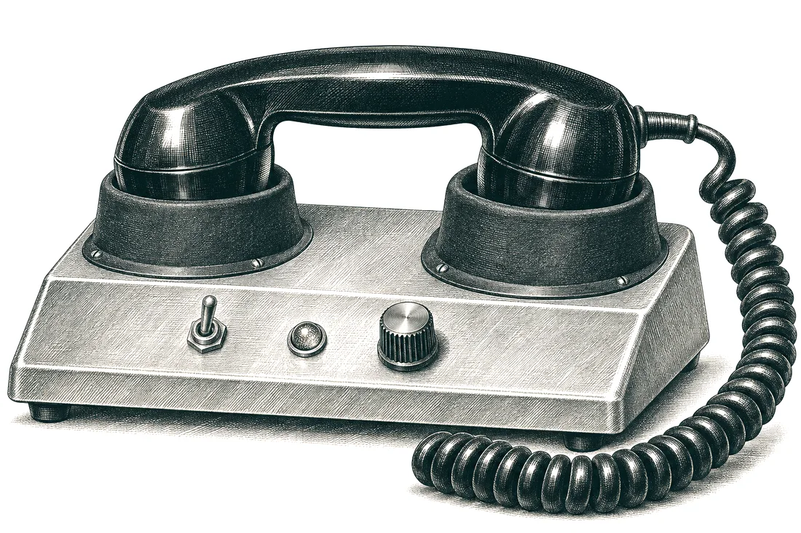
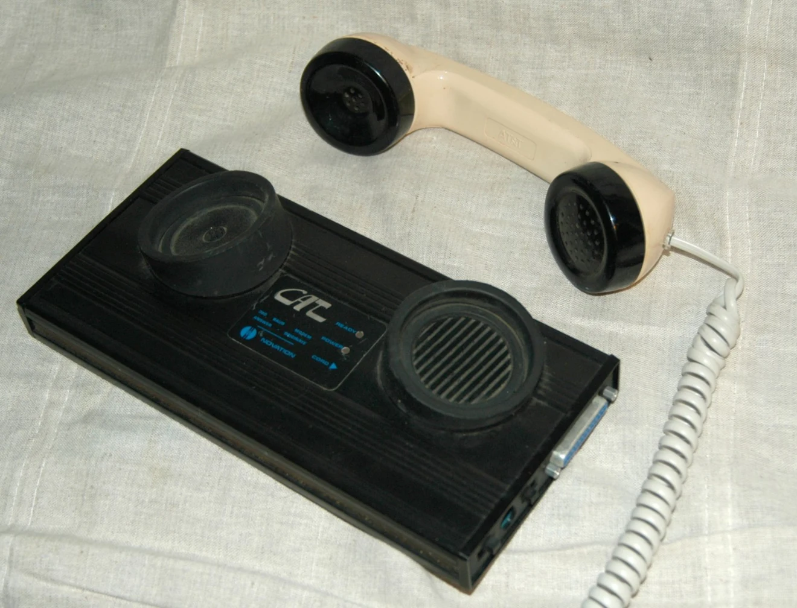
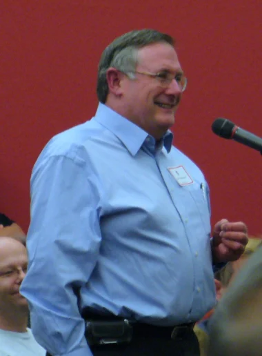

The Modem
Handshake.
Have you ever wondered what those two modems were saying before the screen flashed CONNECT? Inside that burst of whistles and static, two machines were learning how to listen to each other.

Chapter index
Select a connection speedOrigins
Pick up the receiver
By 1962, Bell Labs engineers were measuring how reliably the Bell System’s 101A and 103A data sets could switch between pitches on a telephone circuit. An acoustic coupler made that idea tangible. You dialed a number and settled the handset into two rubber cups. A tiny speaker played data into the mouthpiece. A microphone listened at the earpiece. Bell System Technical Journal, pp. 1725–27 · Elementary Electronics, pp. 41–43

A modem you could build
In 1973, musicians looking for a bass player could leave a message on a terminal in Leopold’s Records in Berkeley. The terminal reached a shared computer by phone. Its modem was expensive enough to bother Community Memory engineer Lee Felsenstein. His Pennywhistle design grew out of the search for a cheaper receiver. Resource One newsletter, p. 3 · Computer History Museum
The trick was hiding between keystrokes. An asynchronous terminal returns to a resting state called mark between characters. Felsenstein used that recurring pitch to give the receiver a fresh reference. Marty Spergel’s M&R Enterprises offered the design as a kit. Readers could build along in the March 1976 issue of Popular Electronics. Felsenstein’s construction article, pp. 43–50 · Felsenstein at VCF West

“And we could do that if we paid attention to the data that was coming through.”
A computer that could answer the phone
In 1977, Dennis Hayes and circuit designer Dale Heatherington took another route. Their 80-103A fitted into an S-100 expansion slot. Through a telephone-line interface, software could dial out or answer a call at home. A friend could call your computer even when you were away from the keyboard. The board still spoke the familiar 300-bit/s tones. What changed was who could pick up. BYTE, August 1977, “Do You Have Some Data to Communicate?” · Heatherington’s photo album
Continue to the 300-bit/s chapterSignal laboratory
Signal stages & synthesis notes
In Waveform view, tighter ripples mean a higher pitch. The orange overlay traces their local peak amplitude. In Pitch map view, time runs left to right through the entire example. Higher pitches sit nearer the top. Bright bands mark strong pitches and a vertical cursor marks your position.
After the speaker went quiet
For years, picking up the phone could interrupt someone’s download. Three different landline systems changed what the wire could do. Their histories overlap the last years of dial-up.
ISDN gave the call a digital path
Integrated Services Digital Network brought a digital interface to the subscriber. Basic-rate ISDN had two independent 64-kbit/s bearer channels and a 16-kbit/s D channel for signaling. A household could use one bearer for a voice call and the other for data. With two available channels and support at both ends, Multilink PPP could bundle them for a nominal 128 kbit/s before overhead. Signaling and call setup survived, but negotiating voiceband pitches was unnecessary on a digital data call. CCITT’s basic interface was already documented by 1988. CCITT I.430, §5 · IETF Multilink PPP
DSL found room above the conversation
The copper pair between a house and the exchange can carry frequencies beyond those passed through a voice call. ADSL uses that extra range on the local loop. In its voice-compatible form, filters separate the ordinary telephone from the data service. The modem measures many narrow channels and assigns more bits to the clearer ones. V.34 had probed many pitches to choose one operating setup. DSL puts many carriers to work simultaneously. Stanford’s John Cioffi, Peter Chow and their colleagues helped develop this discrete multitone approach. ITU-T approved G.992.1 in 1999. ITU-T G.992.1 · Stanford’s development history
DOCSIS learned the neighborhood
Cable modems joined a shared coaxial network. CableLabs’ original DOCSIS specifications appeared in 1997, before V.90 approval. A cable modem first finds the provider’s downstream signal. During ranging, it sends upstream bursts and receives corrections to its timing and transmit power so the headend can hear it in its allotted turn. QAM constellations carried forward, and DOCSIS 3.1 added many closely spaced subcarriers. The old speaker used to let you overhear two modems figuring out a line. Behind a steady cable-modem light, equipment is still measuring a real piece of wire and adjusting how it speaks. CableLabs on the 1997 specification · CableLabs on modulation · Cisco ranging states
Sources & credits
Each chapter links its historical claims to the people, manuals and recommendations behind them. The signal notes identify the source for each synthesized excerpt and describe the edits you hear.
Chapter references
Photographs and quotation
Novation CAT acoustic coupler. G. Edward Johnson (Lorax), 2004. Released into the public domain by its photographer. Resized and converted to WebP for this exhibit. Original and dedication

Lee Felsenstein (Processor Technology). © Marcin Wichary, 2007. Cropped by Gorinin, then resized and converted to WebP for this exhibit. The photograph retains its Creative Commons Attribution 2.0 Generic license. Original photograph · Cropped version · CC BY 2.0

The short quotation from Lee Felsenstein accompanies discussion of his receiver design. Rights in the interview remain with their respective holders. Interview and transcript
A note on dates. Felsenstein recalls a 1973 design and, in the same interview, a July 1976 construction article. The surviving magazine gives March 1976 on its cover and the article’s first page. This exhibit uses the printed date for publication. Original issue, p. 43
The brief Kim Maxwell quotation in the 2,400-bit/s chapter illustrates a manufacturer’s reaction to standardization. Interview by James L. Pelkey, July 19, 1988, p. 30. Interview rights remain with the original holders. Computer History Museum transcript
The opening plate is an original AI-assisted illustration of a handset coupled to a modem.
About the sound
Every listening example is generated locally. The waveform shows samples from the same buffer you hear. The peak envelope outlines the local peaks of that waveform. Short protocol events keep their specified timing where documented. Open the stage list to read at your own pace or jump to a signal. With reduced motion enabled, the trace holds on a still frame during playback and updates when you pause or seek.
Read the signal construction notes and development journal.
License
Original editorial text, cover illustration and synthesized media in Carrier Archive are licensed under CC BY-NC 4.0. Credit Carrier Archive, link the license and identify changes. Historical media and quoted statements have their own credits above.